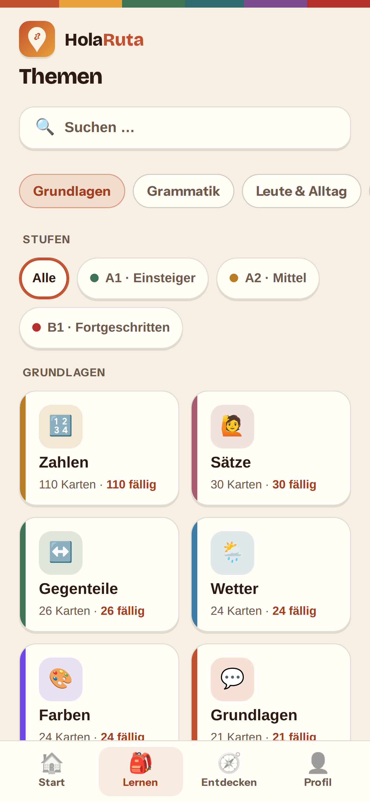
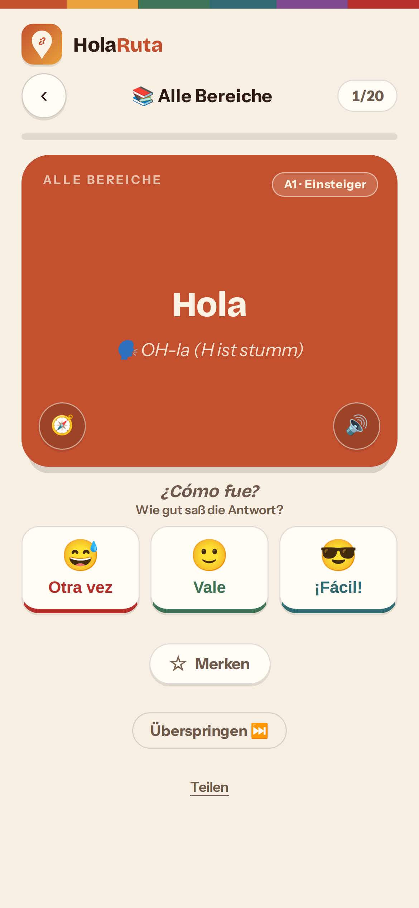
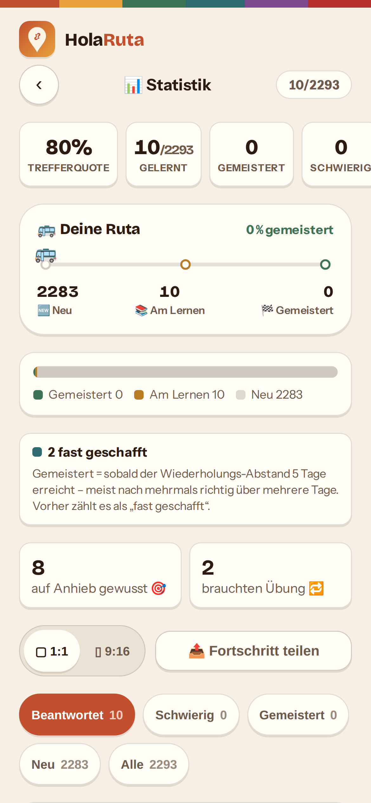

Du vergisst es nicht mehr
Jede Vokabel kommt genau dann zurück, wenn du sie zu vergessen drohst — automatisch. Du musst nichts planen.
REISE-SPANISCH FÜR LATEINAMERIKA
2293 Karten für echte Reisesituationen — Bus, Hotel, Essen, Geld, Notfall. Lateinamerika-korrekt, komplett offline, ohne Konto. Lern in der Hängematte, prüf am Grenzposten.
WAS DRIN IST
Kein Vokabel-Pauken. Sondern die Sätze, die du am Busbahnhof, im Hostel und auf dem Markt sofort brauchst.
Jede Vokabel kommt genau dann zurück, wenn du sie zu vergessen drohst — automatisch. Du musst nichts planen.
Karteikarte, selbst schreiben oder nur hören — wechsle den Modus jederzeit.
colectivo, vuelto, plata, chévere — die Wörter, die man in Lateinamerika wirklich sagt.
Tipp auf 🧭 und jede Karte verrät dir, wann und wo du den Satz wirklich brauchst — plus Reisetipp zur Einordnung.
Einmal geladen, läuft alles offline — Anden, Dschungel, Nachtbus.
Dein Fortschritt bleibt auf deinem Gerät. Keine Anmeldung, keine Werbung.
Von der Busfahrt bis zur Apotheke — 2293 Karten, sauber sortiert.
Und noch viel mehr an Bord
MEHR ALS SPRACHE
Sprache ist nur der Anfang. HolaRuta gibt dir Geschichte, Kultur, Gespür und Anschluss — alles, was aus einer Reise deine Reise macht.
Inka, Kolonialzeit, Unabhängigkeit: die Geschichte des Kontinents in Häppchen, die hängenbleiben. Du läufst nicht an Ruinen vorbei — du liest sie.
Von Kolumbien bis Patagonien: Sitten, Geld, Eigenheiten und Tabus pro Land. Damit du dich überall bewegst, als wärst du schon mal da gewesen.
Wie du grüßt, dich bedankst, feilschst und dich benimmst — die kleinen Gesten entscheiden, ob du Gast bist oder bloß Tourist. Reise, ohne anzuecken.
Höhenkrankheit, Magen, Apotheke, Arzt: die Sätze für den Fall, dass es ernst wird — und die Tipps, mit denen du gesund und fit weiterreist.
Hostel-Spiele, Sprüche, Smalltalk: die Sätze, die aus Fremden am Tisch Freunde fürs Leben machen. Denn Reisen ist am Ende, wen du triffst.
SO FUNKTIONIERT'S
Such dir aus, was ansteht — Geld, Essen, Bus, Notfall. 72 Bereiche, alle reisefertig.

Tippen, antworten, umdrehen. Karteikarte, Schreiben oder Hören — du entscheidest.

Markier ehrlich: Nochmal, Gut oder Einfach. Den Rest plant die App für dich.

INSTALLIEREN
Kein App-Store, keine Anmeldung, keine Updates-Warteschlange.
Kein App-Store, keine Anmeldung, keine Updates-Warteschlange.
2293 Karten, komplett offline, ohne Konto, kostenlos. In 30 Sekunden startklar.